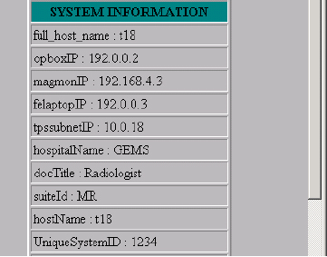
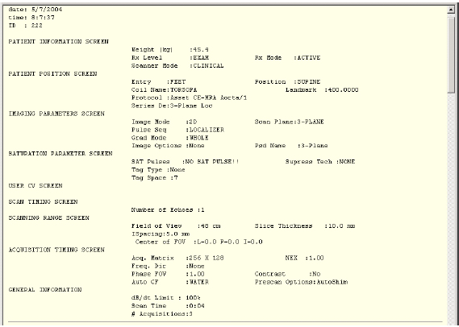
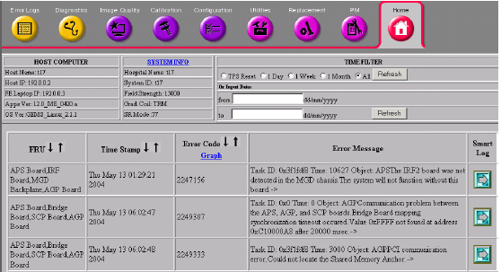
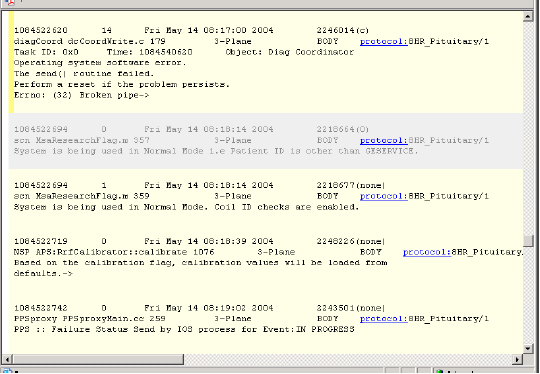
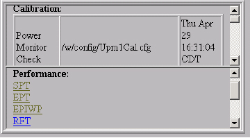

- 00000018WIA30B6CF20GYZ
- id_131068451.3
- Jul 6, 2019 12:03:29 AM
FE - Cockpit
Prerequisites
| Required persons | Preliminary requirements | Procedure | Finalization |
|---|---|---|---|
| 1 | Not Applicable | Not Applicable | Not Applicable |
About this task
| Last Update | 11/10/2004 |
OVERVIEW
Procedure
FE COCKPIT TOP-LEVEL PAGE
Procedure
- The FE Cockpit top-level page is broken in to three main sections: the Header, Functional Grid, and Planned Maintenance.
- Header
- The header contains all the general system information; much of which was on the original Service Browser Home Page. The Host Computer and System Info boxes contain information specific to the scanner.
- The Time Filter area allows you to filter the displayed information based on a desired time criteria. Directly below the Header is a HELP link, which takes the user to a short help summary page.
- Host Computer and System Info
-
The Host computer section of the Header contains general system information such as the Host name, IP address, and Software and OS versions. The System Info section gives details of the Hospital, System ID, and type of system.
Figure 2. SYSTEM INFO POPUP WINDOW 
-
The System Info title is a link, which when selected, brings up a new window (refer toFigure 2) with additional information pulled from the system’s INFO log.
-
- Time Filter
-
Upon initial startup of FE Cockpit, the data shown in the Functional Grid is anything that occurred since the Last TPS reset. [TPS reset] is the default selection for the time filter. When interested in different data, the selections of 1 Day, 1 Week, 1 Month, and All can also be made. To change the time filter, select the radial button to the left of the desired selection, and then hit the [Refresh] button.
-
If any of the Install in Spec results has changed since the FE cockpit was opened, the [IIS Update] button must be selected to update this data in the FE cockpit. This button will run the IIS script, and then update the cockpit with all new information. The Refresh button will only update data from the error and HART log files.
-
A date range can also be entered to filter data. Enter the starting date in the DD/MM/YYYY H:M format. Enter the ending date, using the same format, and select the corresponding Refresh button.
-
- Planned Maintenance
- On the lower right hand side of the FE cockpit top-level page, is the Planned Maintenance status box.
- The following color-coated texts are status indicators that may be shown:
The last PM data available on the system is pulled and posted in this status box. Each test is listed, followed by the Pass, Marginal, or Fail status.
-
Green: PM is due in > than 14 days
-
Black: PM is due in < than 14 days
-
Red: PM is overdue (past due date ); OR PM Data Files are not present.
-
- Patch status is also listed in this Planned Maintenance window. If the patch configuration file has been loaded on the scanner, any patches required will be listed.
- Functional Grid
- The functional grid is where most of the system data is located. This
area has been broken down into nine main functional areas. Any log data that
can be traced to a specific functional area will be listed in the various
columns to the right of the functional areas.
Figure 3. MID-LEVEL PAGE (EXAMPLE) 
- Current functional areas are: Acquisition/Pulse Generation, Gradient, Magnet, Global Operator Console, Patient Handling, RF, Surface Coils, Power/Support Systems, and Software / Firmware /Config.
- Each of the main functional areas can be broken down further into mid-level and/or FRU-level pages (refer to Figure 3). These lower level pages break the log information down into more specific categories or to specific FRUs. In addition, if Calibration or Performance Data is available for that functional area, the details will be listed on the lower level page.
- The functional grid is where most of the system data is located. This
area has been broken down into nine main functional areas. Any log data that
can be traced to a specific functional area will be listed in the various
columns to the right of the functional areas.
SYSTEM DATA
Procedure
- Error Logs
-
The Smart Error Log is a new way of looking at all the errors in the error log. The log has a color-coded background, to separate common errors and messages that are most likely not the problem, from the other errors. Errors with a gray background will often be less critical than the errors with the yellow background.
-
In addition, the Smart Log will try to determine which errors occurred during a service situation. This is determined by the looking at the “Patient ID” entry, and comparing it to a list of “service” names. Examples are service, DQA, test, and those entries with no digits. When the errors happened during a service situation, a dark yellow “Service” box is placed around them.
-
Another key feature of the Smart Log is that it correlates the error to the most recent coil and protocol used. If the protocol entry is too old that it cannot be trusted, the coil, psd, and protocol names will not be listed at all. If there is an active protocol at the time of the error, the “protocol” name will become a link, which can be selected for more specific protocol information (refer to Figure 4).
Figure 4. SMART LOG: PROTOCOL DETAIL 
-
From the functional grid, if one or more errors have been logged for a particular functional area, the corresponding error field will contain text listing the number of errors. This text is clickable, and links directly to the error log details page for only these specific errors (refer to Figure 5). If there are no error messages tied to a specific functional area, the field in the Error log column will be green.
Figure 5. ERROR LOGS DETAIL PAGE 
-
The Error Log column title is a link that will also take the user directly to an error logs detail page, which contains all listed errors.
Figure 6. ERROR CODE HISTOGRAM 
-
From the Error logs Detail page, a [Graph] link is available in the Error Code column, which links to a histogram of the frequency of error occurrence (refer toFigure 6).
-
The far right column of the error log details contains a link that will take the user to the “Smart Log” (refer to Figure 7) . The Smart Log is another way to look at the error, but additional information can be gathered such as Protocol and Coil in use when the error occurred.
Figure 7. SMART LOG 
-
Smart Log
-
- Diagnostics
The Diagnostics column is set up just like the errors column. By selecting the column title, the user will be sent to the details page for the all the diagnostic errors. If a field in the diagnostic column has errors, the number of errors will be listed, as well as a link, which again takes the user to the diagnostic error log details page.
- Calibrations
From the top-level page in FE cockpit, the Calibrations column only shows a pass/fail status. If all calibrations being traced within a functional block have been run, the corresponding grid box will be green. It will also be green if there are no applicable calibrations. If a calibration has not been completed, the functional area’s related field will be red.
The title of the Calibration column is a link, which will pull up a new window with all the calibrations listed (refer toFigure 8). The specific calibrations that have not been run will be listed in red.
The calibration results can also be viewed from the mid-level FRU pages. The block on the mid-level page will list all the pertinent calibrations, the cal file being searched for, and whether or not this file was found (refer to Figure 9). If the file is available, then the time stamp of the file is listed in the right hand column of the block.
Figure 8. CALIBRATION WINDOW (EXAMPLE) 
Figure 9. MID-LEVEL CALIBRATION BLOCK (EXAMPLE) 
- Performance
The Performance column is laid out in a similar fashion as the Calibration column. If a performance test, such as SPT, has failing results, the field corresponding to the affected functional area(s) will be red. If all data passes, the field will be green.
The title of the Performance column is a link, which will pull up a new window with all the performance tests listed (refer to Figure 10). Each of the performance test results can be viewed by clicking on the appropriate test’s “results” link (refer to Figure 11).
The performance test results can also be viewed from the mid-level FRU pages. The status block on each mid-level FRU page lists all the applicable performance tests for the functional area in question, as seen in Figure 9. The title of the test can be selected, and any results available will be shown (refer toFigure 11).
Figure 10. SYSTEM PERFORMANCE DATA SCREEN 
Figure 11. PERFORMANCE TEST DETAILS (EPI EXAMPLE) 
- HART
The last column of the Functional grid is the location where HART information is displayed. If the functional area does not have any FRU’s traced to HART logs, the field will list N/A. Otherwise, the field will show whether there is data in the HART log, and if so, the most recent date the data changed.
If the title of the HART column, or any of the data field links is selected, the user will be taken to the HART log details page (refer toFigure 12).
Figure 12. HART MESSAGE DETAILS (EXAMPLE) 
Finalization
No finalization steps.